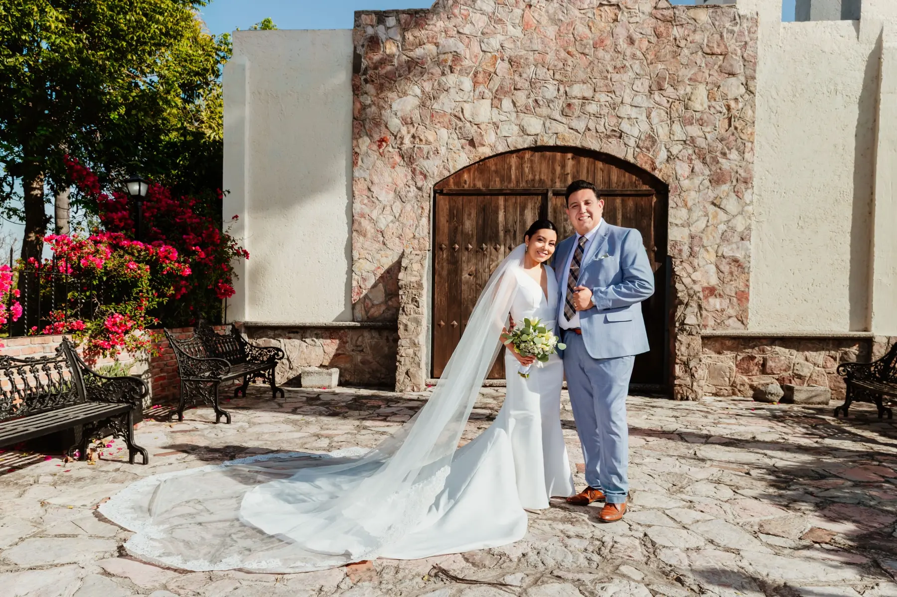
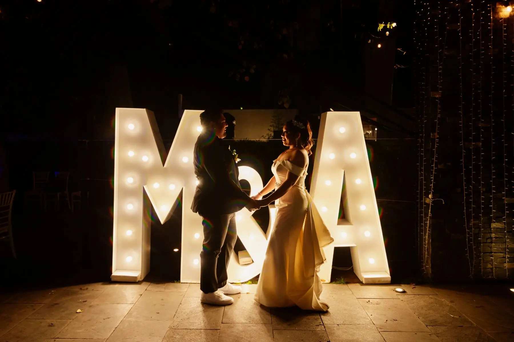
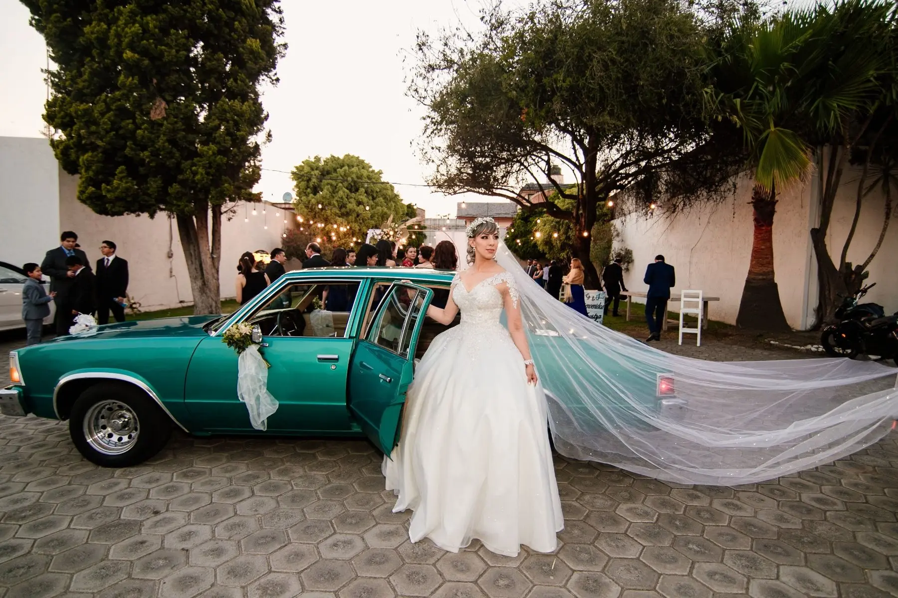
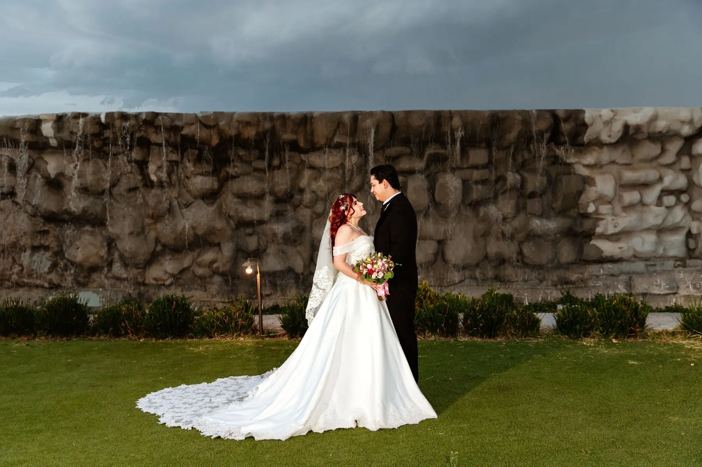
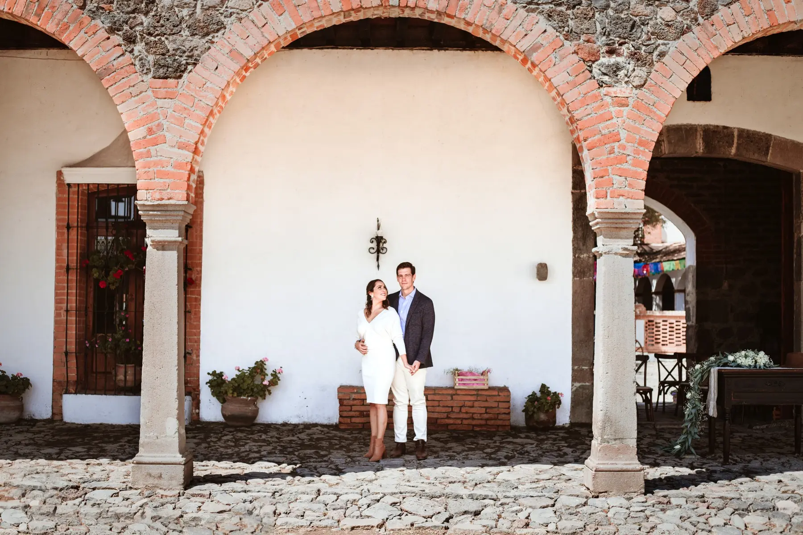
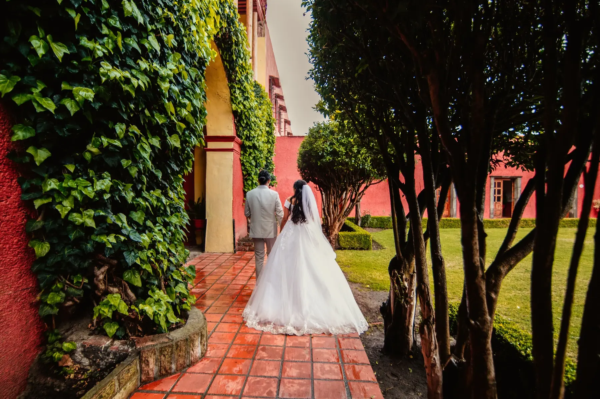
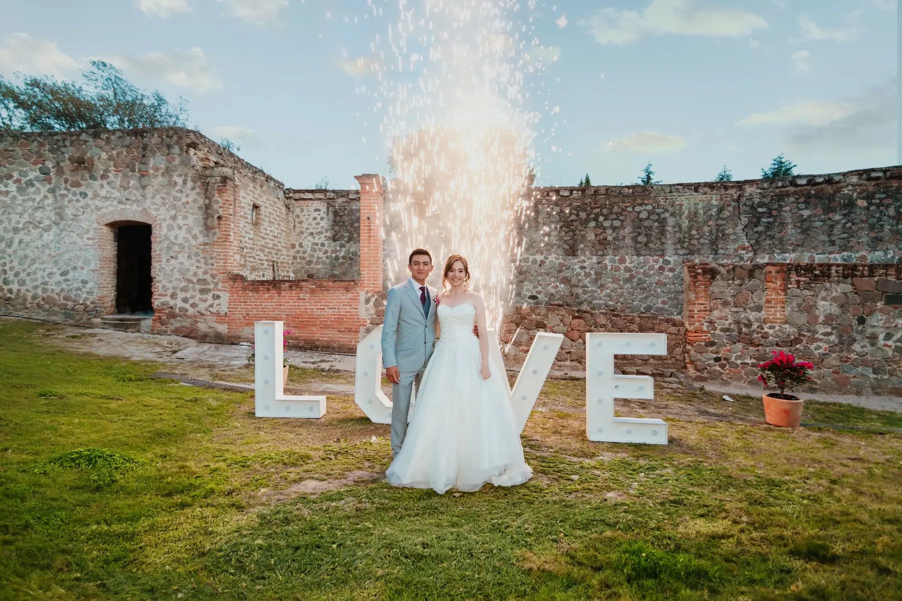
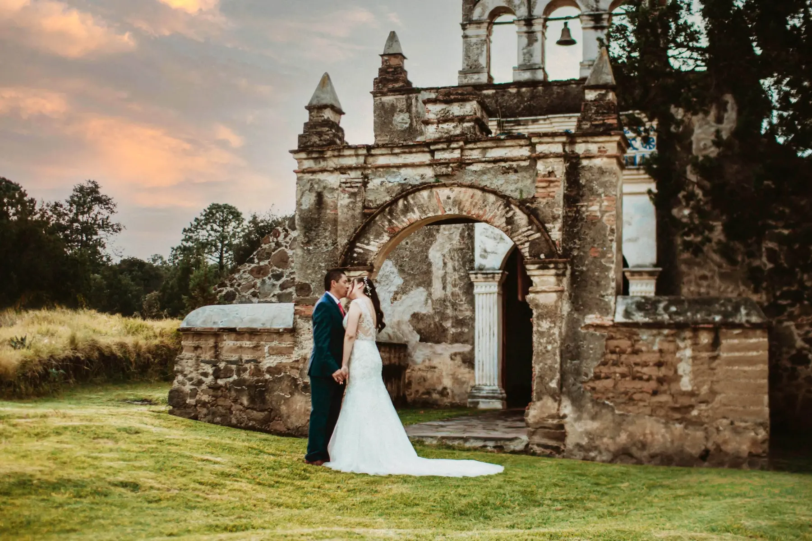

Snapshot Fotografía
Historias
de boda
Puebla · TlaxcalaBodas reales
Cada celebración tiene una forma propia de permanecer.
Este archivo reúne historias completas documentadas por nuestro equipo: preparativos, ceremonias, retratos y celebraciones en Puebla, Cholula y Tlaxcala.
Archivo editorial
Todas las historias.

Carlos & Elizabeth
Capilla del Rosario · Hacienda Real Puebla
Nancy & Alfredo
Hacienda San Juan Bautista Amalucan

Ángel & Mildred
Catedral de Puebla · Hotel Posada Señorial

Gina & Josué
Hotel Tila · Salón Irises

Diana & Julio
Salón Puertagua

Luis & Claudia
Hacienda Soltepec · Parroquia de San Luis Obispo

Arianna & Javier
Recepciones Casa 57 · La Malinche

Macarena & Javier
Rancho Zacatepec

Luis & Marlen
Ex Convento de Tlaxcala · Hacienda San Buenaventura

Cecilia & Josué
Parroquia de Apizaco · Ex Fábrica de Santa Elena

Andrea & Guillermo
Hacienda Tepetzala · Tlaxcala
No hay historias publicadas en esta categoría.
Tu historia puede ser la siguiente
Conversemos sobre su boda.
Fotografía y video de bodas en Puebla y Tlaxcala.
Consultar disponibilidad